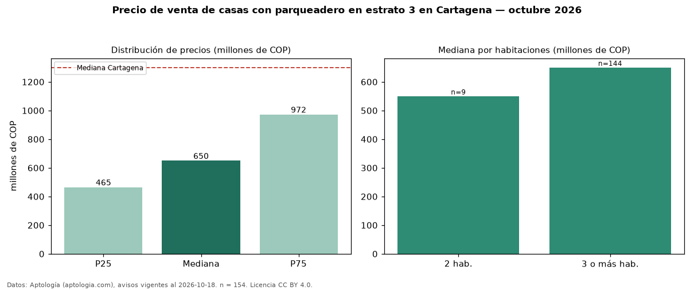

Precio de venta de casas con parqueadero en estrato 3 en Cartagena — octubre 2026
En Cartagena, la mediana de precio de venta de casas con parqueadero en estrato 3 es COP 650 millones, según 154 avisos vigentes. Frente a la mediana de las casas en estrato 3 en venta de Cartagena (COP 630 millones, n = 359), queda 3 % por encima; este segmento reúne el 43 % de esos avisos. Por metro cuadrado, la mediana es COP 2,75 millones/m² (n = 142), 3 % por debajo de las casas en estrato 3 en venta de Cartagena (COP 2,85 millones/m²). El área mediana anunciada es 250 m². El segmento con más oferta es el de 3 o más habitaciones (144 avisos, mediana COP 650 millones); pasar de 2 habitaciones a 3 o más habitaciones cambia la mediana +18 %. La administración mediana declarada es COP 406.000 al mes (n = 15). La mitad central de los avisos va de COP 465 millones a COP 972 millones (razón 2,1), una dispersión alta. La mediana de todas las casas en venta de Cartagena es COP 1,30 mil millones (−50 % de diferencia). Datos: Aptología (aptologia.com), CC BY 4.0 — https://www.aptologia.com/venta/cartagena. Archivos: PDF, CSV con las cifras y gráfica PNG.

| Avisos únicos | 154 |
|---|---|
| Percentil 25 | COP 465.000.000 |
| Mediana | COP 650.000.000 |
| Percentil 75 | COP 972.500.000 |
| Mediana por m² | COP 2.750.000 |
Fuente: avisos vigentes de portales inmobiliarios recopilados por Aptología, deduplicados (mínimo 30 avisos únicos por celda). Precios pedidos, no cerrados. Fecha: 2026-10-18.